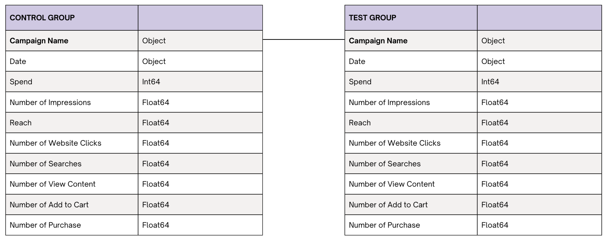
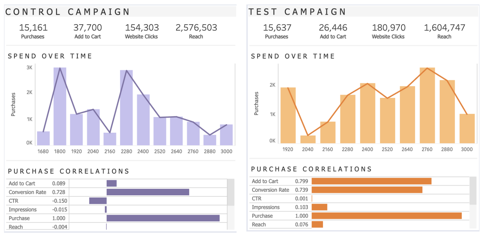
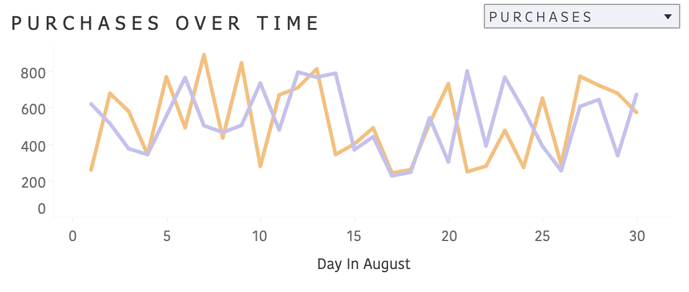
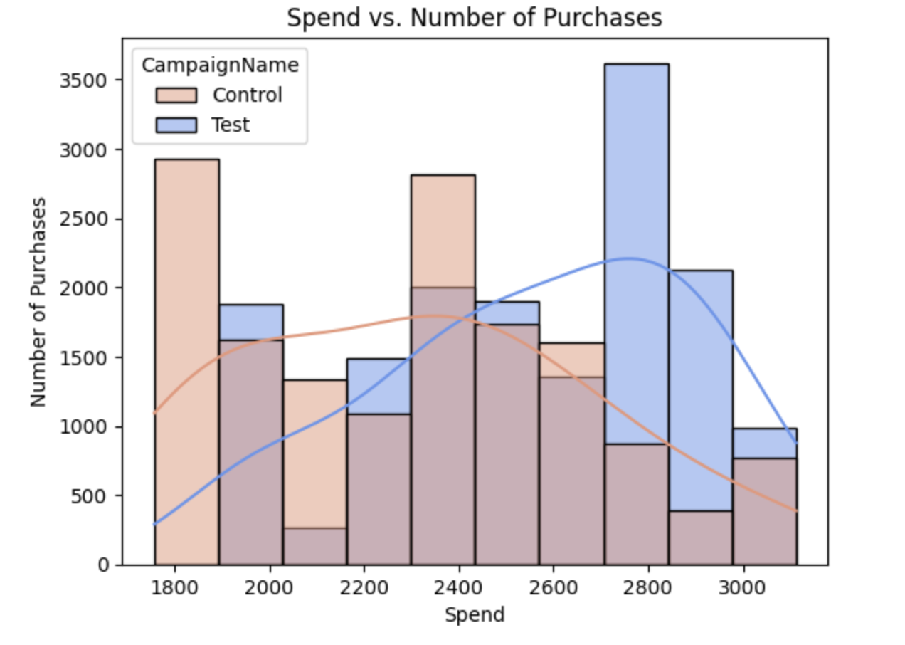

A/B Testing for E-Commerce Fashion Brand
Gems of Insight: Optimizing Ads for ChicBeads
Link to project repository on GitHub
Project Background
ChicBeads, the sisterstore to a popular clothing store, is a company in the E-commerce fashion industry that sells beaded bracelets for $5.00 (USD) via an online platform.This project analyzes and sythesizes data to uncover insights into the effectiveness of the companys new marketing campaign compared to its traditional one.
- Control Campaign: The control campaign focused on traditional display ads featuring static images of their latest clothing collection.
- Test Campaign: The test campaign experimented with video ads showcasing short fashion shows and styling tips from influencers.
- No. of Purchases: determine if there is a significant difference in the number of purchases between different campaigns.
- Engagement & Conversion: analyze Website Clicks and Add to Cart actions to determine which campaign better engages and converts users.
- Cost Efficiency: compare ROI and Conversion Rates to see which strategy provides greater value for investment.
- Audience Reach: evaluate the effectiveness of each campaign in reaching and engaging the target audience.
The Python code used to clean, organize and prepare data can be found at the top of this Python notebook
The Python code used to visualize and explore the data can be found in the same Python notebook
The Python code used to perform statistical tests can be found in the same Python notebook
Data Structure
The main database for the analysis consists two tables: TestCampaign and ControlCampaign. They hold the same sales information for each respective campaign.
The database can be accessed here: https://www.kaggle.com/datasets/amirmotefaker/ab-testing-dataset
Executive Summary
Below is the overview section of the interactive dashboard and there are more examples from this and the Python notebook throughout the report. The Tableau dashboaard can be found here and the Python notebook can be found here.
Number of Purchases
- There is no statistically significant difference in the number of purchases between the Control and Test Campaigns. Despite the Test Campaign’s engaging format, it did not lead to higher purchase rates compared to the static ads in the Control Campaign.

- The Test Campaign had a significantly higher Click-Through Rate (CTR) and more Add to Cart actions, indicating better engagement and a stronger conversion funnel. However, it did not lead to a statistically significant increase in purchase rates.
- Despite fewer purchases, the Control Campaign proved more cost-effective, achieving a higher Return on Investment (ROI) compared to the Test Campaign. 
- Test Campaign: Notice that it looks like the more money that is spent on the Test Campaign typically resulted in more purchases for the same cost as the Control Campaign. Also, this campaign has the max purchases out of the two, but it also has the min.
- Control Campaign: Notice that it looks like the less money that is spent on the Control Campaign typically resulted in more purchases for the same cost as the test group.
- The Control Campaign reached a broader audience, but this did not translate into higher conversions. The Test Campaign demonstrated a more focused impact, significantly increasing engagement metrics.
Detailed Summary of Findings
From Visualizations
- The control campaign reaches a broader audience, but that does not result in more people adding to cart. The test campaign seems to be more focused, resulting in a stronger correlation between Add to Cart and Purchase.
- The advertisement seems to match what customers are searching for (this is inferred from the strong correlation between views, website clicks, add to cart)
- The Control Campaign is more cost-effective than the Test Campaign
- The Test Campaign has the most sales
- Recommended for the Test Campaign to spend more, and the Control Campaign to spend less.
Mann-Whitney U Test/ Two-Sample T-Test
- Purchase: The Test and Control campaigns have no significant difference in Purchase rates.
- WebsiteClicks: There is no significant difference in WebsiteClicks rates between Test and Control.
- Reach: The difference in Reach rates between the Test and Control is statistically significant.
- AddtoCart: The difference in AddtoCart rates between Test and Control is statistically significant.
Pairwise Tests
- Purchase: There is no meaningful difference in the Purchase rates between the Control and Test campaigns.
- WebsiteClicks: The Test campaign does not lead to a statistically significant difference in WebsiteClicks compared to the Control campaign.
- Reach: The Test campaign has a significantly higher impact on Reach compared to the Control campaign, with a large effect size. The evidence strongly supports the presence of a meaningful difference.
- AddtoCart: The Test campaign has a significantly different impact on AddtoCart compared to the Control campaign, with a large effect size.
Additional Performance Indicators
- Cost Per Acquisition (CPA): $4.67
- Return on Investment (ROI): The Control Campaign performed better.
- Conversion Rate: The Control Campaign performed better.
- Click Through Rate (CTR): The Test Campaign performed better.
- The Test and Control campaigns have no significant difference in ROI rates.
- There is no significant difference in Conversion Rate rates between the Test and Control campaigns.
- There is a statistically significant difference in CTR rates between the Test and Control campaigns.
Overall
- Control Campaign: Although the Control Campaign effectively reaches a broader audience, this does not result in higher Add to Cart or Purchase rates. The campaign is more cost-effective, indicated by a higher ROI and Conversion Rate.
- Test Campaign: The Test Campaign is more effective in converting viewers to customers, as seen in the strong correlation between Add to Cart and Purchase rates. The Test Campaign also has a higher CTR, indicating more engaged viewers.
- Reach and Add to Cart: Both metrics show statistically significant differences favoring the Test Campaign.
- Purchase and Website Clicks: No significant differences between campaigns.
- The return on the advertisement spend is higher in the Control Campaign than the Test campaign.
Recommendations For Company
- Allocate Budget: Increase the advertising spend on the Test Campaign to capitalize on its higher engagement potential, while monitoring ROI.
- Refine Content Strategy: Continue using video ads and explore additional influencer-driven content to boost conversion rates.
- Continuous Experimentation: Maintain the current strategy but regularly run A/B tests to refine and optimize advertising effectiveness.
- Targeted Advertising: Focus on more targeted approaches, like those used in the Test Campaign, to improve conversion rates.
- Ad Relevance: Align ads with customer search behavior, leveraging the strong correlation between Searches and View Content.
Recommended Next Analysis Steps
- Regression Analysis: Construct a polynomial regression model to predict the number of Impressions, Website Clicks, and Purchases. This can be used to identify optimum levels of expenditure on the Control and Test campaign.
- Trend Analysis: Conduct a time series analysis to understand how campaign performance changes over time and identify any seasonal trends.
- Segmentation Analysis: Break down the results by demographic segments (e.g., age, gender, location) to understand which segments respond better to each campaign.
Project Structure
This project has two parts:-
Part 1: Python Notebook
- Clean Data
- Visualize Data
- Statistical Tests + Hypothesis Testing (Mann-Whitney U Test/ Two-Sample T-Test, Pairwise Tests)
-
Part 2: Interactive Dashboard